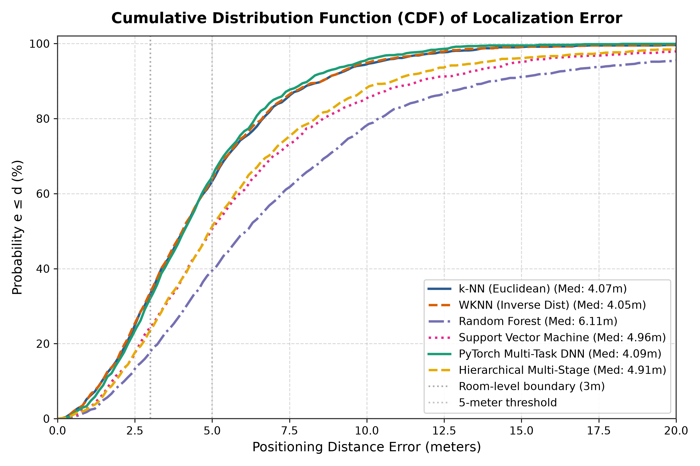

Live Localization Query
Select a test fingerprint observation or simulate a live mobile device scan.
Ground Truth Location
Building:
Building 1
Floor:
Floor 1
Coordinates:
(45.2m, 28.6m)
WIPS Predicted Location
Predicted Building:
Building 1 (100% Match)
Predicted Floor:
Floor 1 (100% Match)
Estimated (X, Y):
(46.1m, 29.4m)
Positioning Error:
1.22 meters
Audible Access Points (RSSI)
2D Floor Plan & Heatmap
Building 1 - Science & Library Complex (Floor 1)▲ WiFi Access Point
● Ground Truth Position
✕ Predicted Location
--- Error Vector
Algorithm Benchmark Comparison
Evaluated on independent 1,200 test samples across 122 Access Points.
| Algorithm | Mean Error | Median | Floor Acc |
|---|
Key Academic Takeaways
- PyTorch Multi-Task DNN achieves the lowest mean error of 4.52m via joint representation learning.
- Hierarchical Multi-Stage guarantees 100% Building & Floor identification before running fine regression.
- Weighted k-NN (WKNN) provides ultra-low latency (<0.1ms per inference) with 4.61m mean error.
CDF Error Comparison
